Claude leyó las fotos del anuncio y el plano del arquitecto, escribió el código que modela cada pared y cada mueble, comparó sus renders contra las fotos hasta acercarse, y terminó en Unreal Engine 5 con luz trazada como en cine.
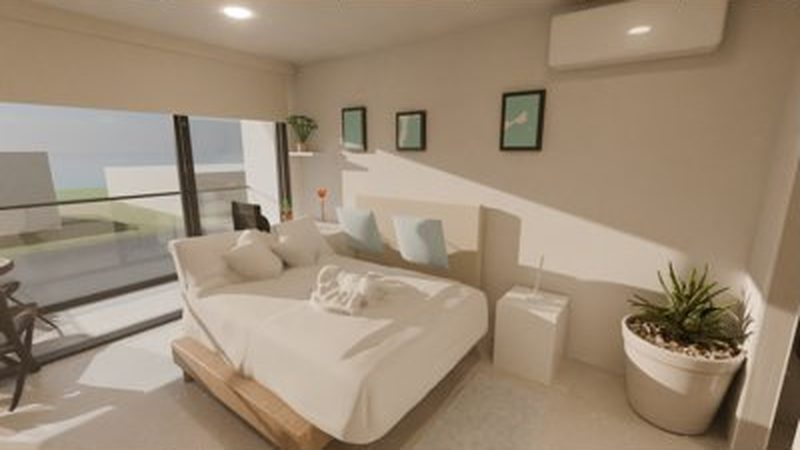
Paredes y muebles salen del código. La distribución ya es la real; los objetos aún son cajas.
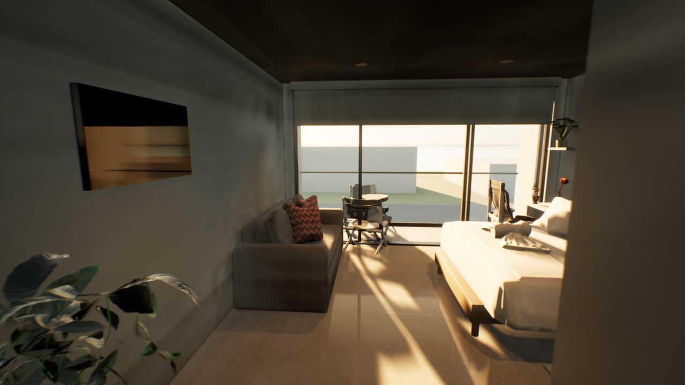
El modelo pasa a Unreal Engine 5.8. Luz en tiempo real: 3 minutos por video.
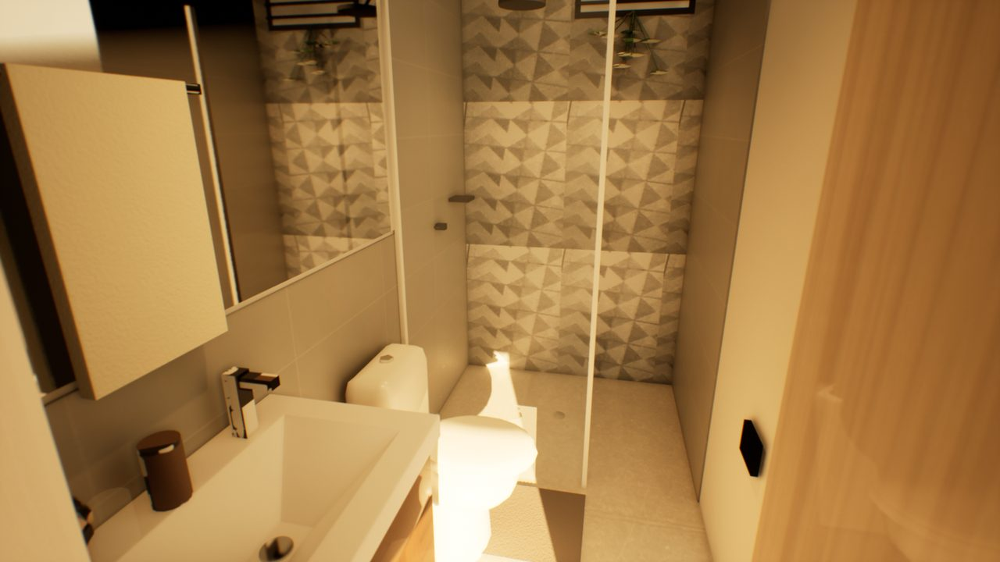
Cocina, baño y lavandería rehechos foto por foto: baldosas, grifería, estufa, nevera.
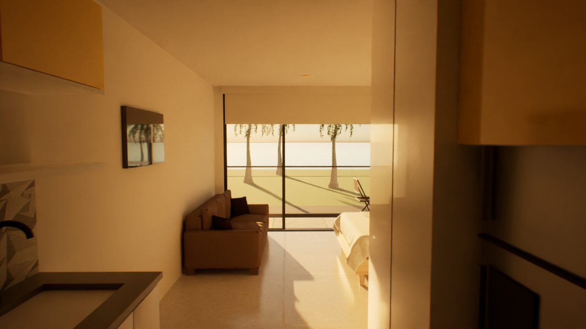
Luz calculada rayo por rayo, con denoiser de Intel. Entran sofá y palmeras de Fab.
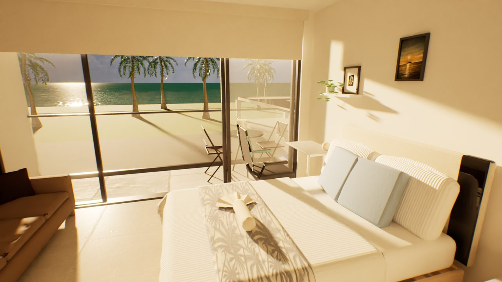
Una toma continua, cielo con nubes reales, mar con oleaje y luz cálida de tarde.
Cada uno es un render real de ese momento del proyecto, sin retocar. Se nota cómo la luz, los materiales y la cámara van cambiando.
La distribución sale del plano y los muebles son genéricos. Ya hay recorrido de cámara.
Gabinetes amarillos, cocina y baño ajustados contra las fotos. Render con Cycles.
Mismo modelo en Unreal Engine 5.8, con sol de tarde y luz en tiempo real. 3 minutos de render.
Cama, cuadros, estufa, baño y lavandería rehechos uno por uno contra las fotos.
Luz trazada de verdad, pero con grano y quemado. Tardó 3 horas: el error que más enseñó.
Denoiser de Intel y exposición corregida. Entran el sofá, las palmeras y los carros.
Una sola toma de 41 s, cielo con nubes y mar con oleaje. La misma del inicio de la página.
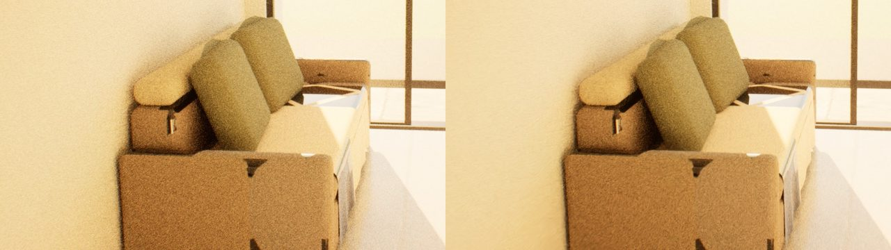
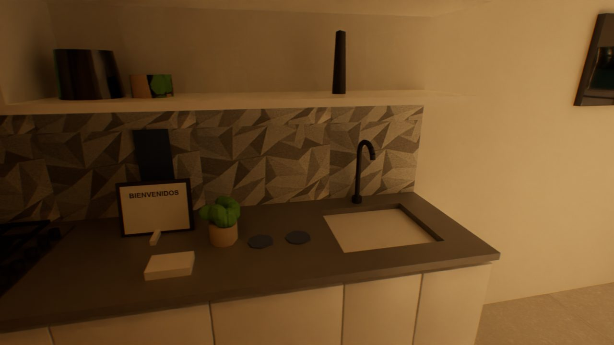
El denoiser que trae Unreal devolvía cuadros negros en esta tarjeta. Se cambió por el de Intel (OIDN) con dos líneas de consola, y con solo 32 rayos por píxel la imagen sale limpia.
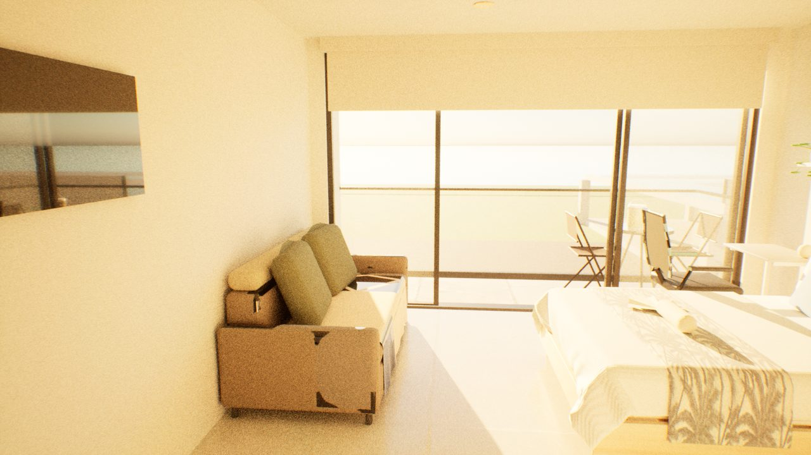
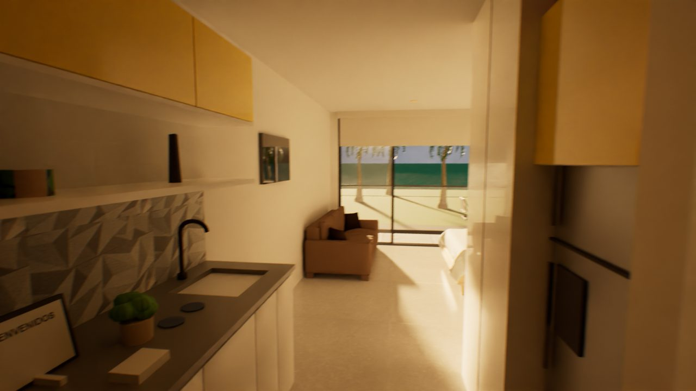
El render usaba las cámaras de Lumen, con 2,5 pasos de exposición de más. El Path Tracer recibió cámaras propias y los blancos recuperaron el detalle.
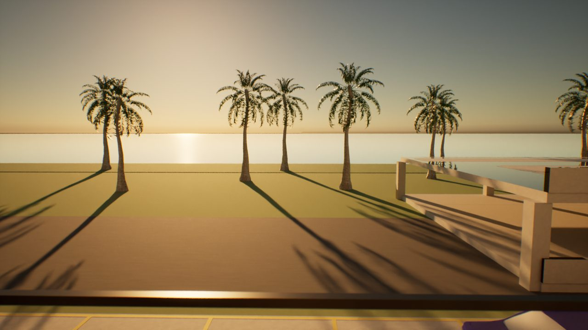
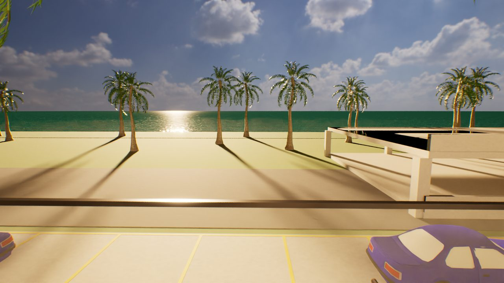
El cielo pasó a ser un domo con una foto HDR de nubes. El mar usa un mapa de olas generado por código, con reflejo del sol que se mueve.
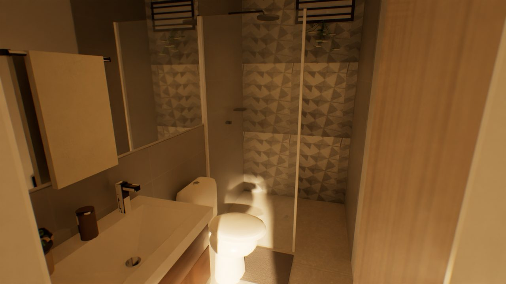
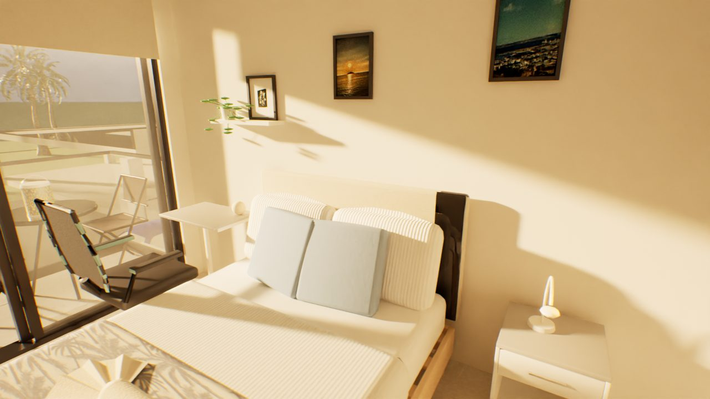
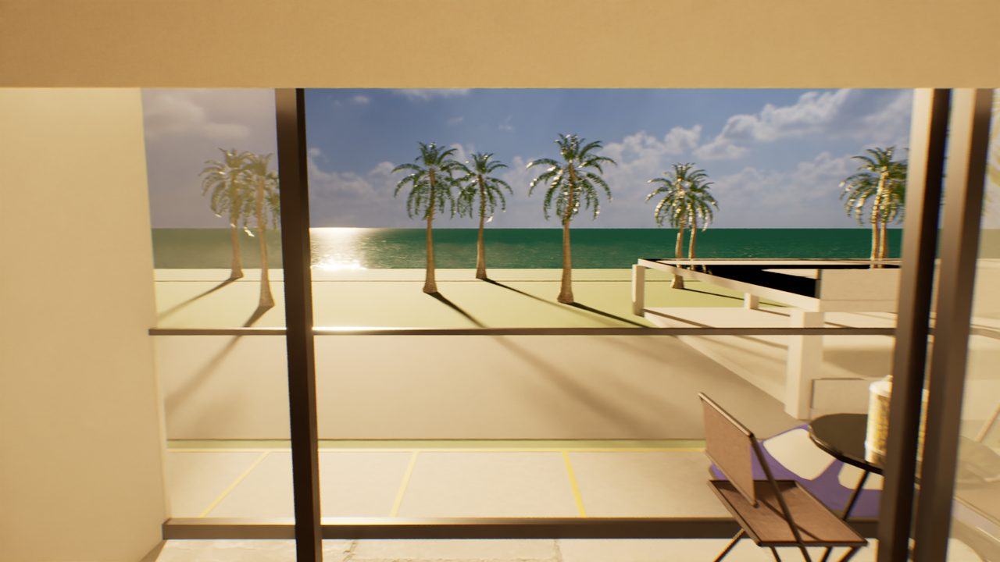
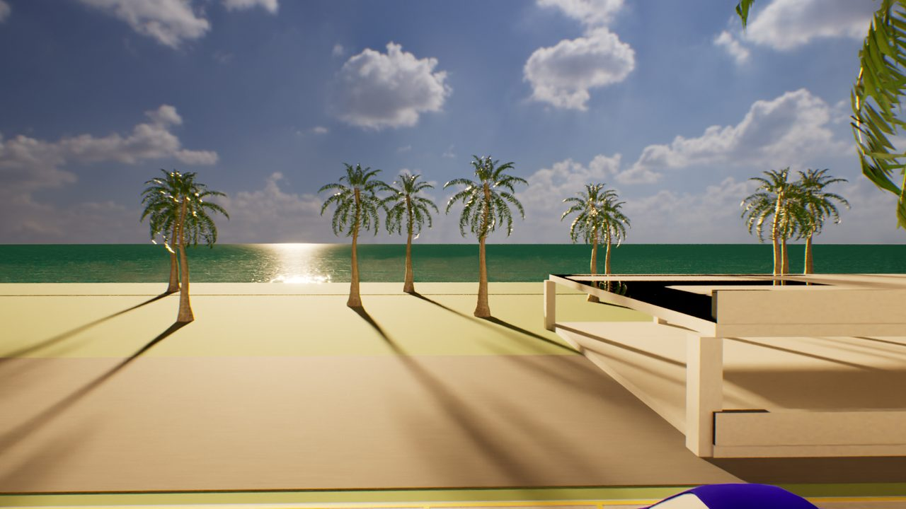
7 fotos y el plano 1:20. Cada foto se volvió una cámara para comparar render contra realidad.
Python que construye muros, muebles y materiales (OpenHouse 3D). Nada se dibuja a mano.
Otro modelo de IA califica cada versión contra las fotos; sus críticas se verifican antes de corregir.
El modelo horneado a GLB entra por scripts: luces, cielo, mar, modelos de Fab y la cámara.
Render en la RTX como tarea programada, denoiser de Intel y ffmpeg al MP4.
Al final, un modelo independiente revisó el video contra las fotos reales. Esto dijo:
Los interiores con sol llegan a 5: "archviz decente". El exterior baja la nota.
Acierta en distribución, baño, cama y cuadros. Falla en la vista del balcón y en el sofá.
Comparte el tono dorado y el plano secuencia; le falta utilería y luz más difusa.
Cada mejora real salió de poner render y foto lado a lado desde la misma cámara.
La pared inventada del balcón, el color del piso exterior y la posición de la regadera los detectó una persona.
Las palmeras se ven bonitas pero bajan la fidelidad: un huésped espera ver lo que va a encontrar.